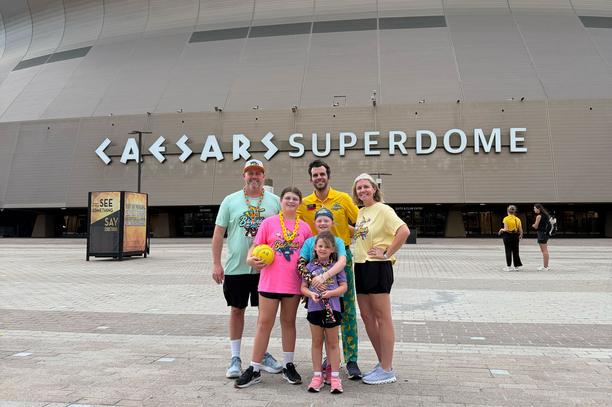
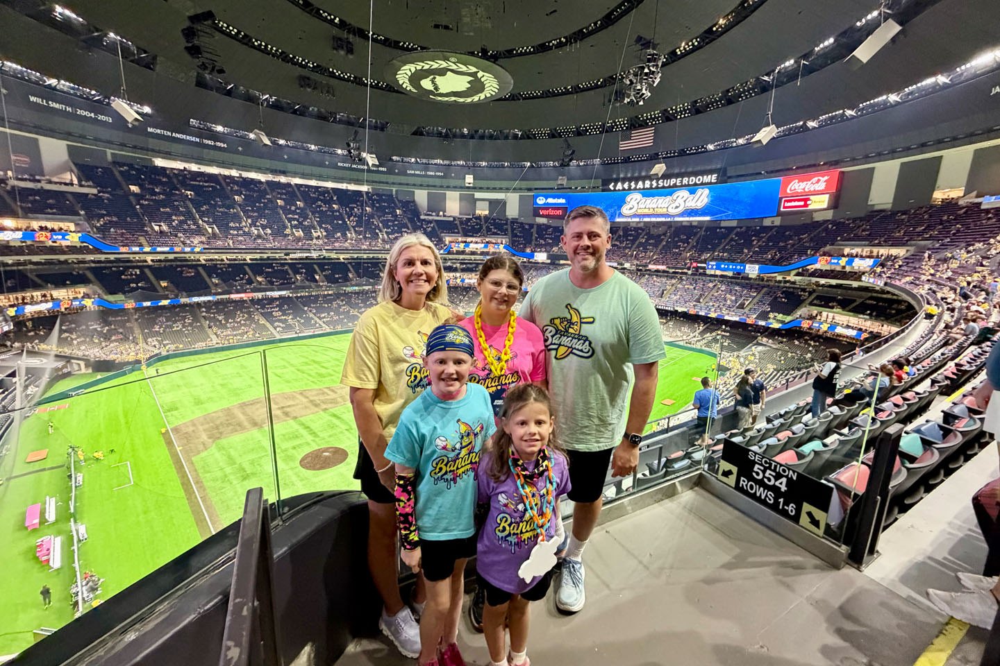
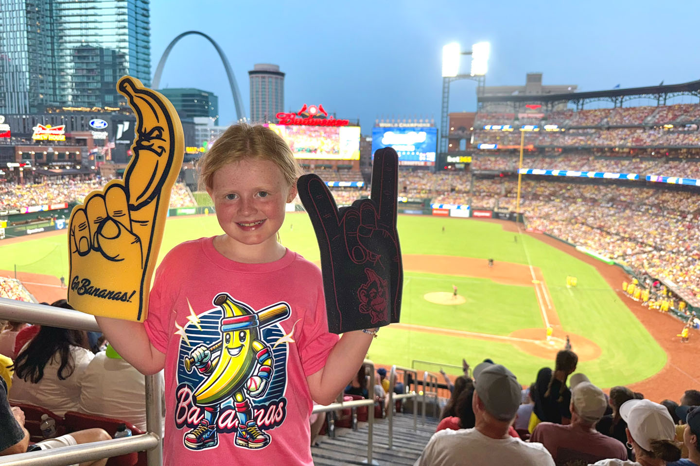

Our Story


Parks
NL East 5/5
Atlanta Braves
Truist Park28 May 2018
Miami Marlins
loanDepot Park21 September 2021
New York Mets
Citi Field19 June 2016
Philadelphia Phillies
Citizens Bank Park25 July 2023
Washington Nationals
Nationals Park5 June 2014
NL Central 5/5
Chicago Cubs
Wrigley Field1 July 2012
Cincinnati Reds
Great American Ball Park18 June 2013
Milwaukee Brewers
American Family Field30 June 2012
Pittsburgh Pirates
PNC Park16 June 2013
St. Louis Cardinals
Busch Stadium26 June 2009
NL West 5/5
Arizona Diamondbacks
Chase Field18 June 2021
Colorado Rockies
Coors Field17 June 2015
Los Angeles Dodgers
Dodger Stadium22 June 2025
San Diego Padres
Petco Park20 June 2025
San Francisco Giants
Oracle Park17 April 2014
AL East 5/5
Baltimore Orioles
Oriole Park at Camden Yards28 July 2023
Boston Red Sox
Fenway Park18 June 2016
New York Yankees
Yankee Stadium14 August 2017
Tampa Bay Rays
Tropicana Field12 July 2014
Toronto Blue Jays
Rogers Centre23 May 2014
AL Central 5/5
Chicago White Sox
Rate Field20 July 2013
Cleveland Guardians
Progressive Field17 June 2013
Detroit Tigers
Comerica Park24 May 2014
Kansas City Royals
Kauffman Stadium12 May 2013
Minnesota Twins
Target Field3 July 2014
AL West 5/5
Houston Astros
Daikin Park31 July 2014
Los Angeles Angels
Angel Stadium21 June 2025
Athletics
Sutter Health Park18 June 2025
Seattle Mariners
T-Mobile Park9 July 2017
Texas Rangers
Globe Life Field19 June 2021
The Kids
Ellie 5
Colorado Rockies
Coors Field17 June 2015
St. Louis Cardinals
Busch Stadium22 May 2016
Atlanta Braves
Turner Field (closed)29 July 2016
Milwaukee Brewers
American Family Field18 June 2017
Cincinnati Reds
Great American Ball Park23 June 2023
Tilly 3
Milwaukee Brewers
American Family Field18 June 2017
St. Louis Cardinals
Busch Stadium3 August 2021
Cincinnati Reds
Great American Ball Park23 June 2023
Poppy 3
Cincinnati Reds
Great American Ball Park23 June 2023
Milwaukee Brewers
American Family Field22 July 2023
St. Louis Cardinals
Busch Stadium24 June 2024
Closed & Future
Closed 3
Atlanta Braves
Turner Field
(last MLB game: October 2, 2016)31 July 2009
Oakland Athletics
Oakland-Alameda County Coliseum
(last MLB game: September 26, 2024)18 April 2014
Texas Rangers
Globe Life Park
(last MLB game: September 29, 2019)30 July 2014
Future 3
Athletics
Las Vegas Ballpark
(under construction, opening ~2028)
Tampa Bay Rays
New Tropicana Field
(planning phase)
Kansas City Royals
New Downtown Ballpark
(planning phase)
Beyond MLB
Minor & Indie Ball 7
Burlington BeesCommunity Field · Jul 29, 2011left MiLB after 2020 Springfield HorseshoesRobin Roberts StadiumJun 15, 2012 & Jul 20, 2023formerly Springfield Sliders · Prospect League Gwinnett BravesCoolray Field · Aug 2, 2013now Gwinnett Stripers Birmingham BaronsRegions Field · Jul 19, 2014 Chicago DogsImpact Field · Jun 17, 2022MLB partner league Normal CornBeltersThe Corn Crib · Jun 18, 2023Prospect League Peoria ChiefsDozer Park · Jun 15, 2024
Photos


Banana Ball 3
Games
Busch StadiumSt. Louis, MO · Jul 19, 2025Bananas vs. Party Animals Caesars SuperdomeNew Orleans, LA · Mar 15, 2026Bananas vs. Party Animals Busch StadiumSt. Louis, MO · Aug 21, 2026Bananas vs. Loco Beach Coconuts · upcoming
Teams
Savannah Bananasseen ×2 Party Animalsseen ×2 Loco Beach CoconutsAug 2026 Texas Tailgaters Firefighters Indianapolis Clowns
Photos


